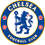

Provável Escalação
por FabioVascão
Atualizado em 07/Outubro/2022
Chelsea
Ultimas Notícias
N'Golo Kante (ritmo de partido) e Wesley Fofana (lesão no joelho) são os únicos ausentes para o confronto com o Wolves, uma partida que cai como o jogo do meio em uma série de jogos de quarta-sábado-terça-feira - então Graham Potter poderia fazer um punhado de mudanças com o gerenciamento de minutos em mente. É tudo um jogo de adivinhação no momento, pois vimos três sistemas diferentes usados (3-5-2, 4-2-2-2, 3-4-2-1) em suas três primeiras partidas no comando, enquanto o próprio Potter está em território inexplorado com um elenco tão grande e uma programação regular de dois jogos por semana. Nove jogadores começaram os dois jogos competitivos na última semana, com Ben Chilwell um possível candidato a um descanso, já que ele passou tanto tempo afastado nos últimos 12 meses e acabou de ter 90 minutos consecutivos. Reece James também acumulou quatro jogos completos por clube e seleção na última quinzena e Thiago Silva, de 38 anos, durou os dois jogos desta semana, mas Potter pode considerar esse par muito importante para o seu time. Marc Cucurella está agora livre de problemas e "estará envolvido" contra o Wolves: ele poderia jogar como lateral no lugar de Chilwell, mas não é usado nessa posição por Potter desde fevereiro, com o espanhol sendo o lateral-esquerdo. papel híbrido de meia/lateral-esquerdo em Brighton. É também uma posição que o vimos ocupar na primeira partida de Potter no comando, contra o RB Salzburg, com Raheem Sterling brilhando no papel de 'Leandro Trossard' mais adiante no flanco. Jorginho e Kai Havertz esperam ser convocados após pequenas lesões que forçaram em parte seus bancos na Liga dos Campeões, enquanto Trevoh Chalobah busca uma oportunidade no lugar de Fofana no meio-campo. Kalidou Koulibaly também é uma opção em ambos os lados dos três zagueiros (ele apareceu na esquerda na quarta-feira), enquanto Conor Gallagher está fazendo o possível para dar ao seu técnico uma dor de cabeça na seleção no meio-campo, com algumas participações positivas no banco ultimamente.